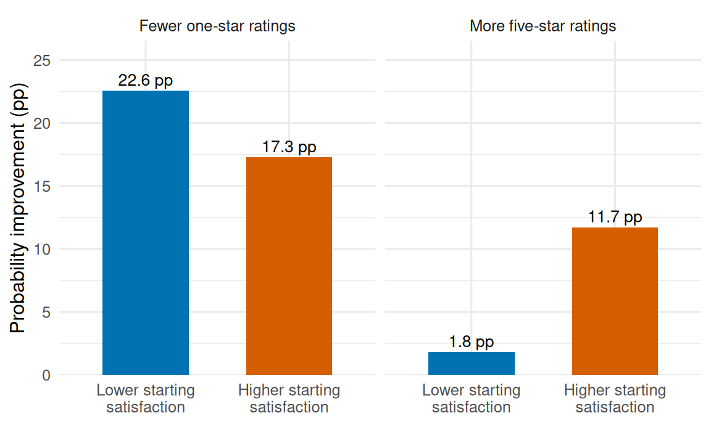

28 LongBet: Ordinal Outcomes and Customer Experience
28.1 A rollout can improve more than the average rating
A SaaS company rolls out a new support workflow across customer accounts. Each account reports a weekly satisfaction rating from one to five stars. The product team wants to know whether the workflow creates more enthusiastic customers, reduces very poor experiences, and helps different kinds of accounts at different stages of adoption.
An average rating compresses those questions into one score. A five-star indicator answers the enthusiasm question, but treats one and four stars alike. Ordinal LongBet models the whole ordered distribution, then lets the team choose the category effects that matter for its decision.
This chapter builds on LongBet’s panel model. The earlier ordinal BART chapter introduces ordered outcomes in a cross-sectional setting; here, calendar time and time since adoption are separate inputs. The ordered-probit extension is implemented in longbet-jax (Wang et al. 2026), building on the original LongBet framework (Wang et al. 2024).
28.2 The model: a latent response, observed through ordered thresholds
Code the five ratings as \(Y_{it}\in\{0,1,2,3,4\}\), with 0 representing one star and 4 representing five stars. For account \(i\) in week \(t\), write
\[ \begin{aligned} Y^*_{it} &= \eta_{it}+\epsilon_{it}, &\epsilon_{it}&\sim N(0,1),\\ \eta_{it} &= \mu(X_i,t) +b_{Z_{it}}\beta_{S_{it}}\nu(X_i,S_{it},t)+\gamma_i,\\ Y_{it}=k &\quad\Longleftrightarrow\quad \theta_k<Y^*_{it}\leq\theta_{k+1}. \end{aligned} \]
Here \(X_i\) contains account characteristics measured before treatment, \(Z_{it}\) records adoption, and \(S_{it}\) counts exposure weeks, starting at 1 after adoption and remaining 0 before it. Treatment stays on once adopted. The prognostic forest \(\mu\) learns baseline patterns; the treatment forest \(\nu\) learns how responses vary with account characteristics and time. The Gaussian process \(\beta_S\) pools information across exposure lengths. An optional \(\gamma_i\sim N(0,\sigma_\gamma^2)\) captures persistent account differences. The prognostic scaling parameter is fixed at 1 here.
The latent scale is a modeling device, not a satisfaction score with business units. To identify it, the package fixes the residual variance to 1 and the first finite threshold to 0:
\[ \theta_0=-\infty,\qquad \theta_1=0<\theta_2<\cdots<\theta_{K-1},\qquad \theta_K=\infty. \]
Tree priors shrink the fitted surfaces, the GP prior regularizes the exposure factor, and the remaining thresholds have a proper ordered-normal prior (default scale 5). Thresholds and residual scale are shared across accounts, weeks, and treatment. This avoids assigning equal distances to rating labels, while imposing a common latent location-shift structure.
Convert each posterior draw into probabilities
Compare adoption with never adopting at the same account profile and calendar week. For a treated cell, the two latent locations are
\[ \begin{aligned} \eta^1_{it}&=\mu(X_i,t)+b_1\beta_{S_{it}}\nu(X_i,S_{it},t)+\gamma_i,\\ \eta^0_{it}&=\mu(X_i,t)+b_0\beta_0\nu(X_i,0,t)+\gamma_i. \end{aligned} \]
The untreated contribution uses exposure zero in both the GP and the forest. For posterior draw \(d\), the category probabilities and their effects are
\[ \begin{aligned} p^{a,(d)}_{itk} &=\Phi\!\left(\theta^{(d)}_{k+1}-\eta^{a,(d)}_{it}\right) -\Phi\!\left(\theta^{(d)}_k-\eta^{a,(d)}_{it}\right),\\ \Delta^{(d)}_{itk}&=p^{1,(d)}_{itk}-p^{0,(d)}_{itk}, \qquad a\in\{0,1\}. \end{aligned} \]
\(\Phi\) is the standard normal CDF. The five category effects sum to zero: gains in some ratings must come from losses elsewhere. Calculate the CDF and the contrast inside each draw, then summarize. Transforming an average latent effect gives a different answer.
For exposure \(s\), average these contrasts over the treated cells that reached that exposure, denoted \(\mathcal I_s\):
\[ \operatorname{ATT}^{(d)}_k(s)= \frac{1}{|\mathcal I_s|}\sum_{(i,t)\in\mathcal I_s}\Delta^{(d)}_{itk}. \]
The resulting draws describe uncertainty about the average probability effect. Different exposure groups may contain different accounts. In these examples, randomized adoption supplies identification; an observational application still needs credible adjustment, overlap, and a defensible treatment-timing assumption.
28.3 Heterogeneity changes which customer outcome to target
There are two sources of heterogeneity. The treatment forest can learn different latent responses for different account profiles. Even the same latent response produces different probability effects at different starting levels of satisfaction. Moving an account away from a one-star experience is different from moving an already satisfied account into five stars.
For a numerical illustration, use thresholds 0, 0.7, 1.4, and 2.0. Compare two profiles with untreated latent locations \(-0.6\) and \(0.5\), giving both the same \(+0.6\) latent treatment shift. These are specified model values, not fitted estimates or evidence about comparative accuracy.
A customer-success team trying to prevent poor experiences and a growth team trying to create advocates could prioritize different profiles. A latent-effect ranking alone misses that distinction. LongBet supplies conditional effects at account profiles; it does not identify whether a particular person’s unobserved individual rating would improve.
28.4 When keeping the lower ratings improves estimation
Consider a support workflow where five-star ratings are uncommon. We compare methods on 20 independently simulated rollouts, each with 240 training accounts, eight weeks, and five rating levels. Adoption is randomized across weeks 3, 4, 5, and never. Predictions are evaluated on another 240 independent accounts within the observed calendar and exposure range. The highest rating appears in only 2.7% of training observations on average.
The generating model has a smooth baseline, a saturating exposure response, a covariate-dependent treatment effect, and a shared residual scale. There are no persistent account random effects in this comparison. Every method uses the same inputs; held-out accounts and known simulation effects never enter fitting or tuning.
The main question is whether modeling all five ratings improves the estimate of the five-star probability ATT, relative to binary LongBet fitted only to the five-star indicator. The table also reports error in the conditional effects for all categories, to check the richer output used for heterogeneous customer-experience analysis.
| Model | Five-star ATT RMSE (pp) | Category effect RMSE (pp) |
|---|---|---|
| Ordinal LongBet | 1.10 | 2.91 |
| Binary LongBet | 2.09 | — |
| Ordinal spline regression | 1.24 | 4.55 |
| Tuned boosted trees | 1.85 | 6.49 |
Ordinal LongBet had 72.4% lower mean squared error than binary LongBet for the five-star ATT and won on 17 of 20 panels. Lower ratings contain information about the shared latent response that dichotomization discards. This is a useful advantage even when the final business metric is binary.
The prespecified paired comparison’s 97.5% interval for binary minus ordinal MSE was [1.82, 4.61] squared percentage points, favoring ordinal LongBet. It uses resampling of the 20 panels; its tails are approximate. All 40 ordinal/binary fits pass the monitored ATT and threshold diagnostics after the specified extensions.
The other comparisons are descriptive. The spline baseline includes nonlinear covariate terms, week and exposure effects, and treatment interactions; the boosted classifier is tuned by cross-validation grouped by training account. Ordinal LongBet also had lower conditional category-effect error here, but this does not establish a general nonlinear modeling advantage. A harder nonlinear pilot did not mix adequately and provides no such evidence.
Simple ordinal regression is a strong practical alternative: its five-star error was close, and its fit and prediction took under a second per panel, versus about six minutes for ordinal LongBet on this CPU run. The information gain from using all categories is available to both. The trade-off is LongBet’s flexible panel structure and posterior decision analysis against additional computation and sampling checks.
28.5 From rating effects to a rollout probability
There are two distinct probabilities in the analysis:
- Outcome probability: how likely is a five-star rating under a given treatment history and account profile?
- Posterior decision probability: given the data and model, how probable is it that the treatment effect meets the team’s target?
Frequentist ordinal regression and flexible classifiers can estimate outcome probabilities and heterogeneous effects too. The Bayesian advantage here is a posterior over those effects: the same paired draws support intervals, business thresholds, and joint criteria while preserving their dependence. A confidence level from a frequentist interval is not that posterior probability. Ordinal regression remains a useful baseline rather than a method that cannot handle probabilities.
For a worked decision, take the first prespecified panel, seed 91000, at exposure week 4. Suppose the team requires at least a 3-percentage-point increase in five-star probability and a 20-point reduction in one-star probability. These thresholds are illustrative business choices, not targets selected or validated by the simulation. The question is
\[ \Pr\!\left\{ \operatorname{ATT}_4(4)\geq0.03\ \text{and}\ \operatorname{ATT}_0(4)\leq-0.20 \mid\mathcal D \right\}. \]
Here the subscript indexes the rating code; the argument is the exposure week. The calculation is short:
# These columns contain paired category ATT draws for exposure 4.
passes <- with(decision_draws, top_att >= 0.03 & lowest_att <= -0.20)
probability_meets_targets <- mean(passes)
probability_meets_targets[1] 0.9392The posterior probability of meeting both targets is 93.9%. This concerns the average probability effects for the specified account population and exposure, not the chance that every customer improves. Check both conditions inside the same draw; multiplying their marginal probabilities would assume away their posterior dependence. The event itself passes the sampling checks (\(\widehat R=\) 1.000, effective sample size 14,151); its Monte Carlo standard error is about 0.2 percentage points.
For a customer segment, average its account-level probability contrasts within each draw first, then apply the same business rule. Segment definitions, exposure support, rollout costs, and the consequences of a wrong decision still matter. A high posterior probability under the fitted model does not by itself make deployment worthwhile.
A minimal fitting workflow
Use a revision of longbet-jax that includes the ordinal R API. In R, y is an account-by-week matrix coded 0–4, z is the matching adoption matrix, and x contains baseline account features. This recipe uses the comparison’s settings; the chapter’s numerical results above come from the saved, checked experiments.
library(longbet)
fit <- longbet(
y = y, x = x, z = z, t = seq_len(ncol(y)),
outcome = "ordinal", num_categories = 5L,
num_chains = 4L, num_burnin = 10000L,
num_sweeps = 5000L, n_skip = 4L,
num_trees_pr = 20L, num_trees_trt = 20L,
max_depth_pr = 5L, max_depth_trt = 5L,
b_scaling = FALSE, split_time_trt = FALSE,
random_intercept = FALSE, device = "cpu", random_seed = 391000L)
pred <- predict(fit, x = x, z = z, summary_only = TRUE)
category_att <- att_probabilities(pred)
# [exposure, category, draw]; category position 5 is the five-star rating.
top_att_draws <- category_att$att_full[, 5, ]Each chain retains 5,000 draws after 20,000 sampling iterations, following 10,000 burn-in iterations. Longer sampling may be needed: diagnose the effects and business events you report. Fixed coding sets \(b_0=b_1=1\); split_time_trt = FALSE removes exposure splits while retaining calendar time in the treatment forest. These choices change the prior. The comparison disables account intercepts because its simulated errors have no persistent account component; that choice needs reconsideration for real panels.
28.6 When to use a different model
An ordinal location shift cannot describe every change in customer experience. If treatment makes both one-star and five-star ratings more likely within the same account profile, a shared-scale shift is inadequate. In a separate 20-panel dispersion simulation, five-star ATT RMSE was 20.35 points for ordinal LongBet, 4.39 for ordinal regression with an exposure-dependent scale, and 3.95 for boosted trees. 4 LongBet fits retained sampling failures; these results are a warning about both model fit and computation.
Use ordinal LongBet when the whole rating distribution matters, shared thresholds and scale are credible, and the panel’s heterogeneous trajectories justify a flexible model. Include ordinal regression as a fast baseline. If the goal is explicitly the mean of a chosen numeric score, continuous regression can be appropriate. If only a common binary threshold matters, a binary model can also be sufficient. The rare-rating comparison establishes a specific gain from retaining information, not a universal ranking of methods.
Data and computation
The chapter rebuilds its numerical summaries from panel-level comparison results and paired decision draws, checking their recorded hashes. The method notes give the generating mechanisms, model settings, diagnostic rules, and reproduction instructions; provenance records the source and software versions. These are simulated business examples, not results from a production rollout.